Executive overview
AI Hub is mid-commercialization, moving open beta to paid public beta
This report cross-references four live sources: design in the AI Hub Figma project,
delivery in Jira, engineering in the liferay-ai-hub/liferay-portal fork, and the
ai-hub module in the Liferay codebase. They agree on where the product is heading: billing
and metering, safety guardrails, agentic content generation, and governance (permissions and audit), with
infrastructure maturing from SaaS toward PaaS — and design consistently runs a stage ahead of public
code.
Strong throughput (paid public beta marketplace integration shipped, content generation features landing), but a flagged cross-team dependency risk, three failing CI checks on open PRs, and a documentation backlog trailing engineering.
ai-hub code modulesThe strategic picture
Three things to take away
The marketplace / billing milestone (SFDC-1307) landed and 60+ items closed in the last 30 days. Momentum is real, not projected.
Guardrails, metering, agentic generation and governance all show up in design, Jira, PRs and code — one coherent bet, not scattered features.
27 design files map what ships next (ahead of engineering), while LPDOPS-1854 flags an unconfirmed cross-team dependency risk on the one.liferay timeline.
Where the investment is, by product pillar
How strongly each pillar shows up across the four sources (design, Jira, GitHub, code), weighted 0–4. Detail in the alignment matrix below.
Orientation
New to this project? You should know…
- AI Hub is not one Jira project. Work is spread across LPD (product), LRDOCS (docs), LCI (cloud), LPDOPS (ops) and more — matched here by reference, not by a single board.
- The code lives in
modules/dxp/apps/ai-hub/of liferay-portal; public work happens in the forkliferay-ai-hub/liferay-portal, where every PR title carries its LPD key. - It’s in paid public beta, organized around four pillars: guardrails, token metering, agentic content generation, and governance (permissions & audit).
- Design runs ahead of code. One Figma project (
490735323) holds 27 files; read it to see what’s coming before it reaches engineering. - The current top risk is LPDOPS-1854 — an unconfirmed cross-team dependency against the one.liferay date.
- Statuses look bilingual. The Jira instance is localized, so you’ll see states in mixed English and Spanish (e.g. Cerrada, En revisión).
People
Who you can talk to
Derived from Jira assignees on the design tickets and from GitHub PR authors on the matching engineering work — a starting point per area, not an org chart.
| Area | Design (Jira / Figma) | Engineering (GitHub) |
|---|---|---|
| Guardrails / Model Armor | Pablo Agulla | MrJohn1911 |
| Agents & content generation | Uge Ortiz Castilla | DavysonMelo, mariuo, abesousa |
| Metrics & metering | Uge Ortiz Castilla | ipeychev Vertex tagging |
| Permissions & audit | PJ (AI Studio) | pedro-oliveira446, mariuo |
| Tier-aware UI & LLM config | Pablo Agulla | not in code yet |
| HTTP Request node | Antonio Alvino | fabian-bouche-liferay |
| Admin chat history / assistant chat | Antonio Alvino | Mylena-Rodrigues, DavysonMelo |
| AI disclaimer (epic) | Julia Duarte | not in code yet |
Names are taken verbatim from Jira assignees (design) and GitHub PR authors (engineering); the two systems use different identities, so treat each column independently rather than matching people across them.
Source 1 · Delivery
Jira snapshot
AI Hub is not a single Jira project. Work is spread across projects and matched here by text reference. Counts are floor values from the reviewed set.
Open work by project
Open work by priority
Flow split: roughly 96 in progress vs 64 to do.
Recently shipped (last 30 days)
- SFDC-1307 AI Hub Paid Public Beta, Marketplace integration (commercial milestone).
- Content generation landing: Site Generator wizard backend and page (LPD-95386, LPD-87351, LPD-87298), HTTP Request Node UI (LPD-95316).
- Subscription lifecycle propagation, Suspend / Stop / Renew (LPD-90607).
- RAG content-retrieve event pipeline (LPD-93578, LPD-94974, LPD-96133).
- Provisioning fixes: config persists on reboot (LPD-94843), provisioned-user email (LPD-96039).
- Design and accessibility: Dark Mode activation point (LPD-53889).
Source 2 · Engineering
GitHub pull requests
Repository liferay-ai-hub/liferay-portal, a public fork of
liferay/liferay-portal. 26 open, 306 closed, 30 issues, 42 labels, 0 milestones.
PR titles map directly to LPD Jira keys.
Open PRs by theme
| PR | Jira / title | Author | State | Comments |
|---|---|---|---|---|
| #405 | LPD-90634 Enable Permissions Modal on each Data Source entry | mariuo | CI pass | 9 |
| #404 | LPD-90462 Enable Permissions Modal on each Agent entry | mariuo | CI pass | 14 |
| #403 | LPD-90977 + LPD-79411 (HTTP Request Kaleo Node) WIP | fabian-bouche-liferay | No CI | 11 |
| #402 | LPD-89838 [BE] AI_AGENT_CONFIG_CHANGE audit event | pedro-oliveira446 | CI fail | 8 |
| #401 | LPD-90369 [BE] Model Armor template on Guardrails create | MrJohn1911 | CI fail | 5 |
| #400 | LPD-90632 Enable Permissions Modal on each Instruction entry | mariuo | CI pass | 20 |
| #399 | LPD-90670 [BE] AI Hub Agent Manager role on site initializer | DavysonMelo | CI pass | 7 |
| #397 | LPD-89874 [BE] AI_AGENT_EXECUTION audit event | pedro-oliveira446 | Changes requested | 22 |
| #396 | LPD-90367 [FE] Relate a guardrail with an agent in the form frontend | MrJohn1911 | CI pass | 8 |
| #395 | LPD-90364 [FE] Model Armor based Guardrails template UI frontend | MrJohn1911 | CI fail | 52 |
| #392 | LPD-90368 [BE] Object definitions for Model Armor template | MrJohn1911 | CI pass | 28 |
| #387 | LPD-78738 Update Workflow Designer visual styles for AI Hub frontend | ugeortiz | No CI | 6 |
| #374 | LPD-89663 Add Assistant Chat to the content generator | DavysonMelo | CI pass | 11 |
| #373 | LPD-89208 Technical Task | Site Builder Agent | mariuo | CI pass | 23 |
| #372 | LPD-89207 Technical Task | Agents Foundation | abesousa | CI pass | 10 |
| #371 | LPD-87408 Use the CMS theme instead of the AI Hub WIP frontend | Mylena-Rodrigues | No CI | 5 |
| #370 | LPD-62272-2 Add AI Assistant Chat in the page editor | Mylena-Rodrigues | No CI | 4 |
| #369 | LPD-86876 Generation and review workflow | DavysonMelo | CI pass | 24 |
| #368 | LPD-89366 Page Builder Wire | mariuo | CI pass | 14 |
| #367 | LPD-89224 Page Builder Converters | mariuo | CI pass | 10 |
| #366 | LPD-89345 Tag Vertex AI requests with company_id and user_id | ipeychev | feature | 7 |
Attention on the failing checks (#402, #401, #395) and the changes-requested review (#397). PR #395 carries 52 comments, the most contested item in the open set.
Source 3 · Code
Code map: the ai-hub module
Located at modules/dxp/apps/ai-hub/ on branch master, present in both
the fork and the public parent repo. Module inventory verified via raw source.
Note: ai-hub-cell-web is referenced by a recently completed ticket (LPD-87298) but is not yet
visible on public master, likely pending merge. The API package split (agent, guardrail,
quota, workflow.node) mirrors the delivery and PR themes almost one to one.
Signature · Cross-source alignment
Where the four sources agree
Reading the same product across design, delivery, engineering, and code. A filled dot means the theme is strongly present in that source; a half dot means partial or indirect presence.
| Theme | Design (Figma) | Jira | GitHub PRs | Code (API package) |
|---|---|---|---|---|
| Guardrails / Model Armor | ||||
| Token metering & billing | ||||
| Agentic content generation | ||||
| Permissions & audit | ||||
| SSO & provisioning | ||||
| Infrastructure SaaS to PaaS | ||||
| Accessibility & design |
Legend: strong partial not present in source.
Attention
Risks and open questions
Primary delivery risk
LPDOPS-1854 (Critical, In Analysis): flagged risk of multiple unconfirmed cross-team dependencies threatening the one.liferay timeline.
Source 4 · Design (captured)
Figma state: the AI Hub project
The whole AI Hub Figma project (490735323) at a glance — 27 design
files read via the REST API. Ten embed an LPD key, so design joins
directly to Jira delivery (the badge on those cards is the live Jira status); the other 17 are discovery /
exploration surfaces scoping what comes next. Design status on unkeyed files is a heuristic read of page
names — a hint, not truth.
What design tells us that the other sources don’t
- Design is the leading indicator. The 10 keyed files (top row below) are what engineering builds next; the 17 discovery files are the pipeline after that — Phase 2, page-builder agents, a centralized MCP server, vendor model mapping.
- Converging now: Tier-aware UI (LPD-92796), LLM configuration (LPD-92801), HTTP Request node (LPD-95084) and Admin chat history (LPD-95093) are En revisión in Jira with live design — the next wave to reach code.
- Foundations already explored: RAG, Instructions & Guardrails, Create/Edit Agents and Metrics were design spikes, now Cerrada; their Figma files remain the reference.
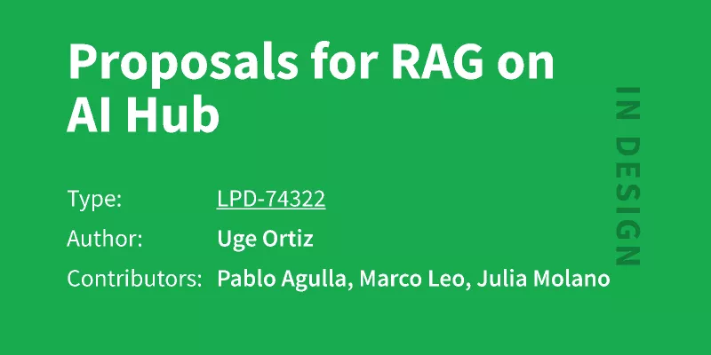
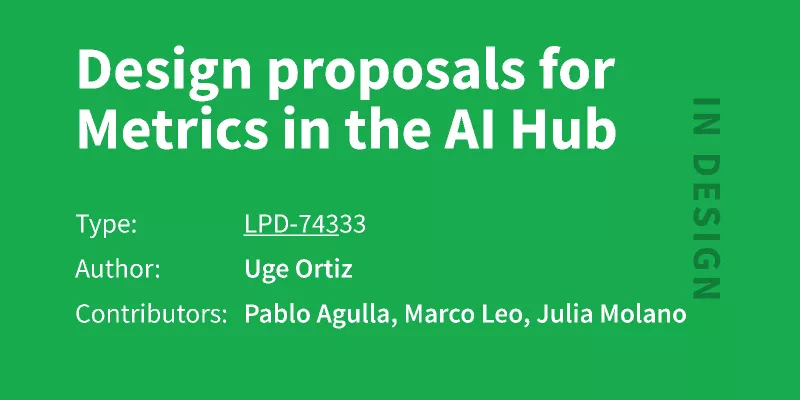
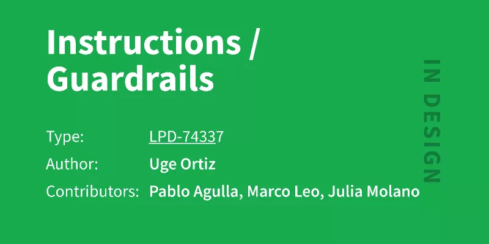
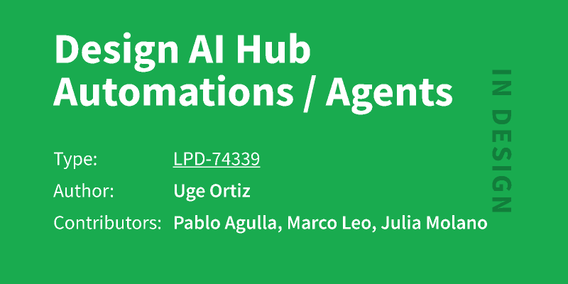
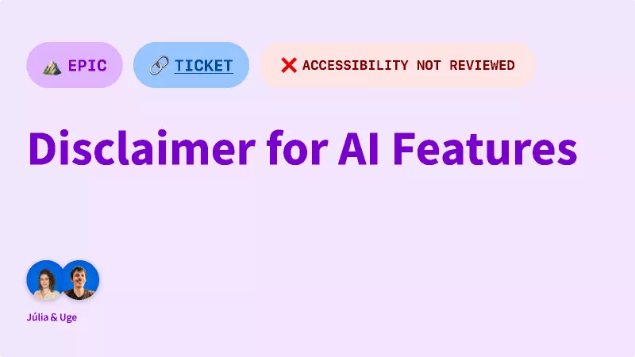
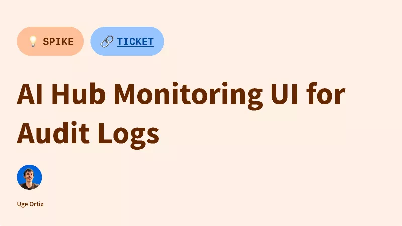
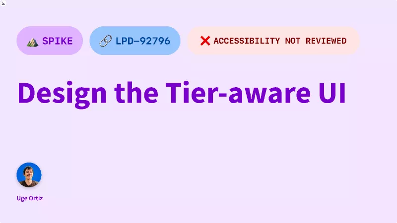
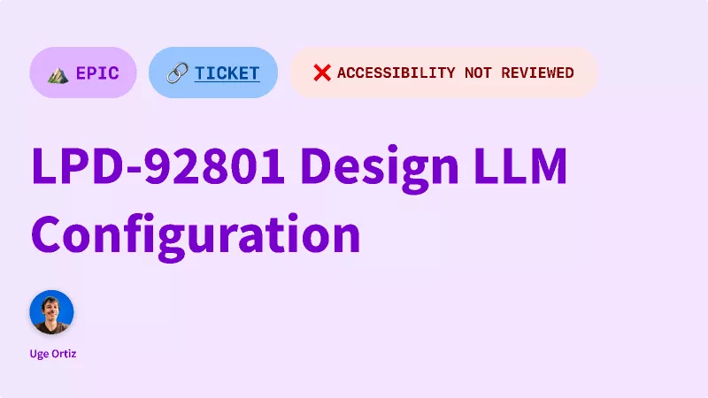
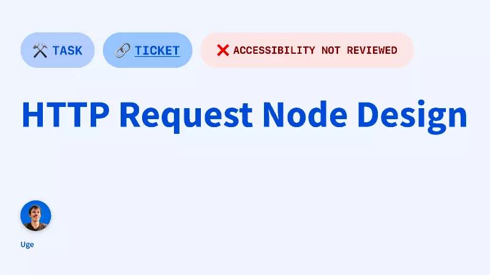
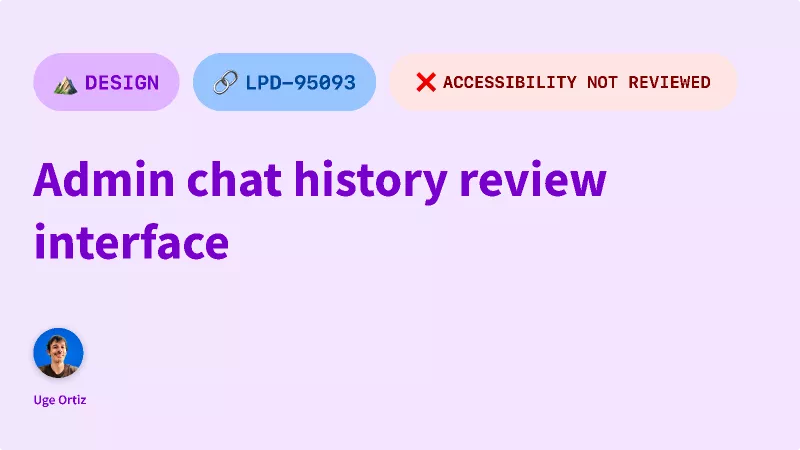
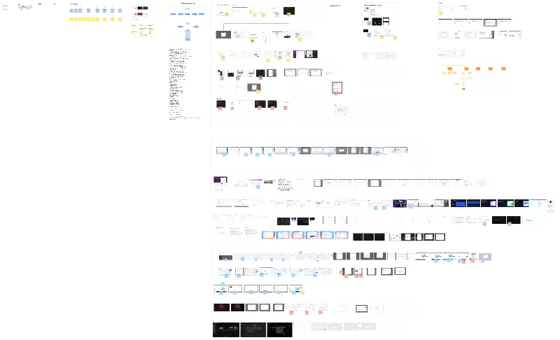
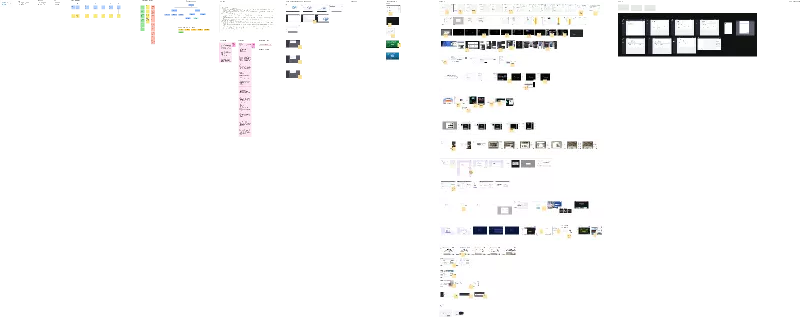
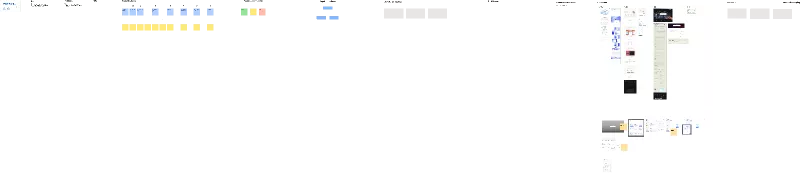
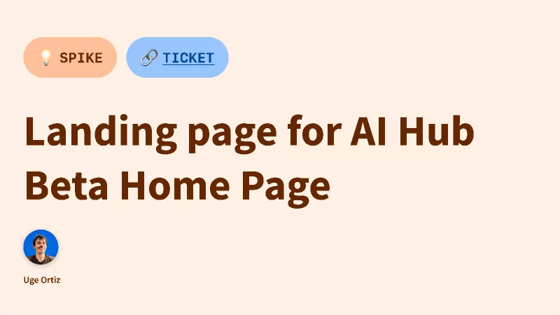
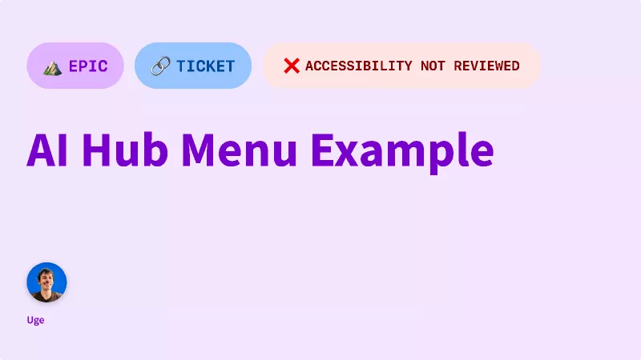
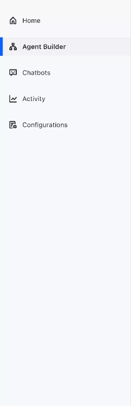
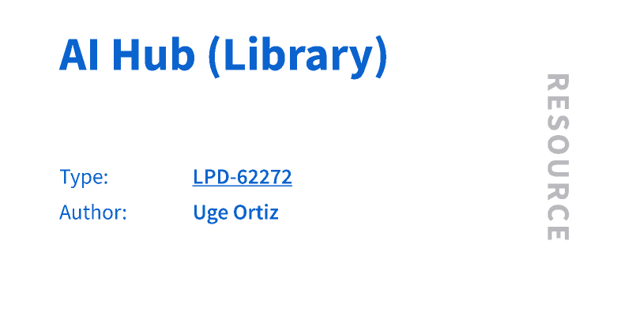
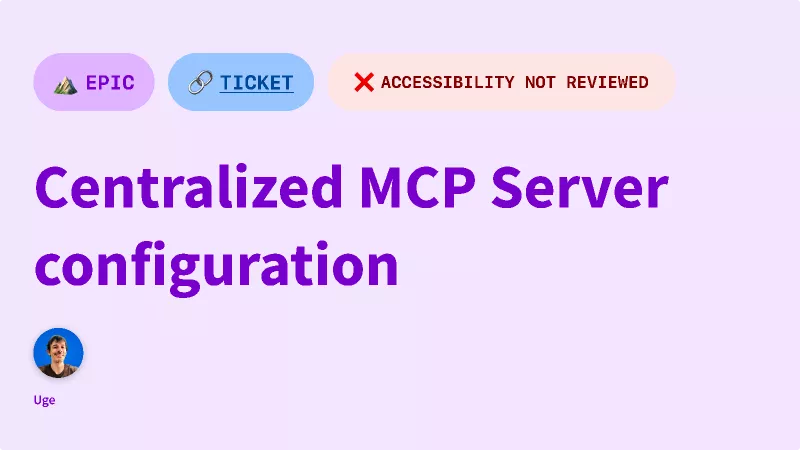
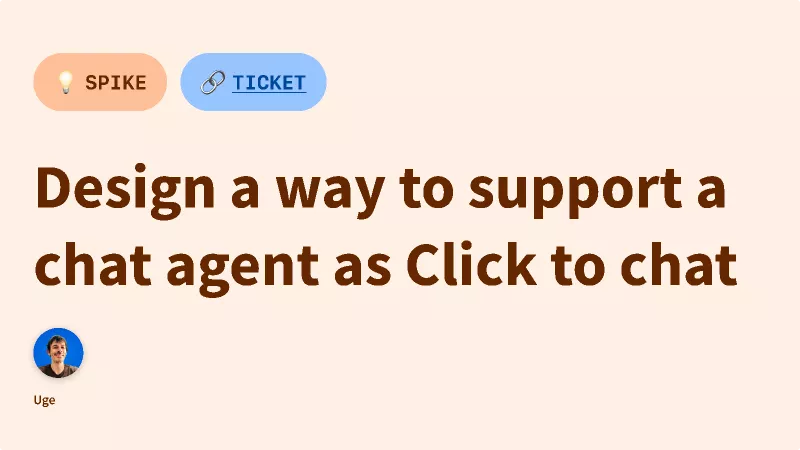
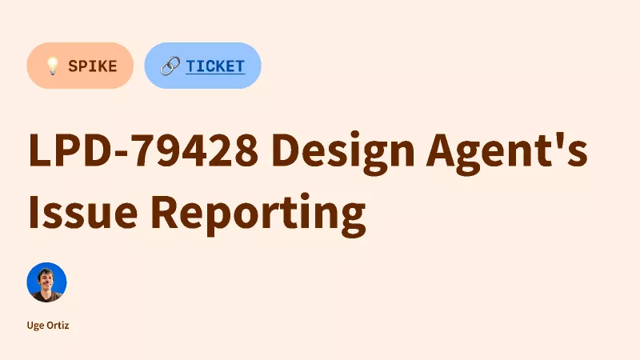
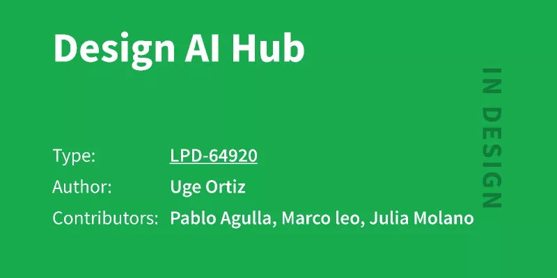
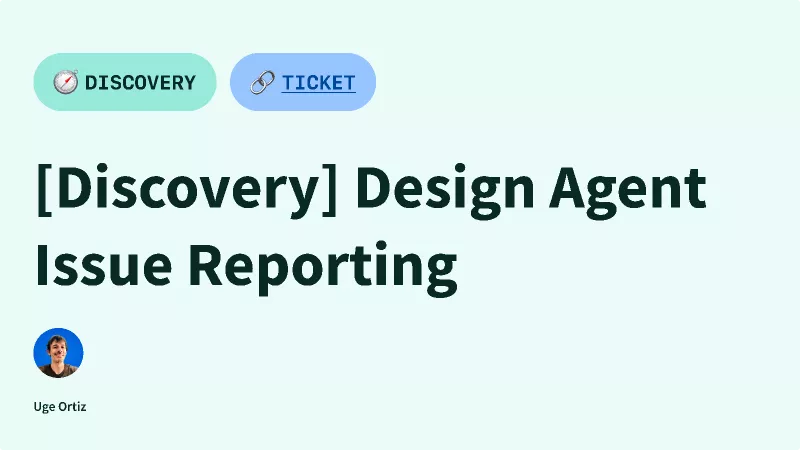
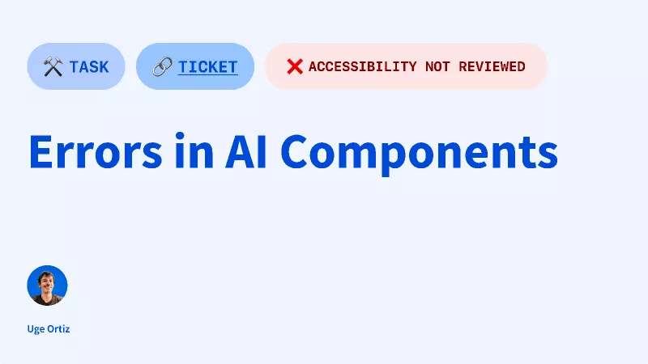
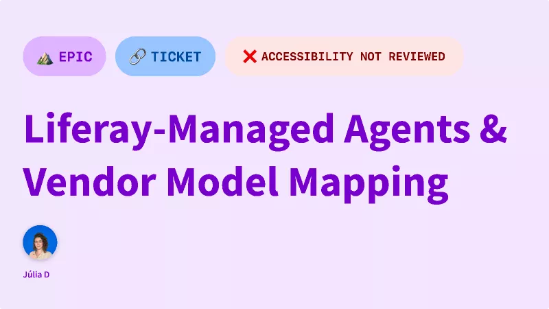
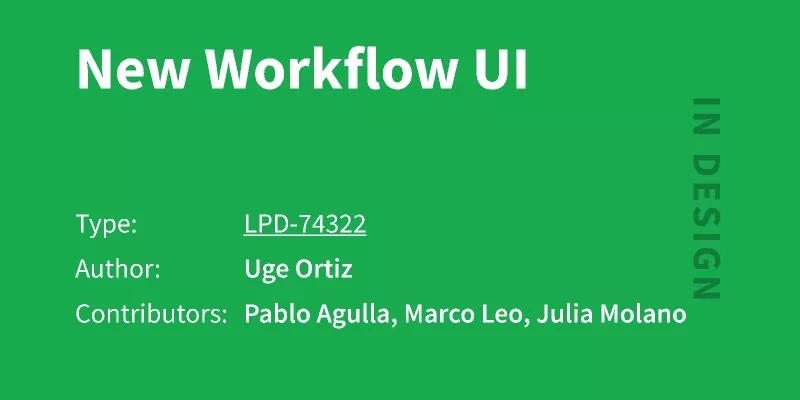
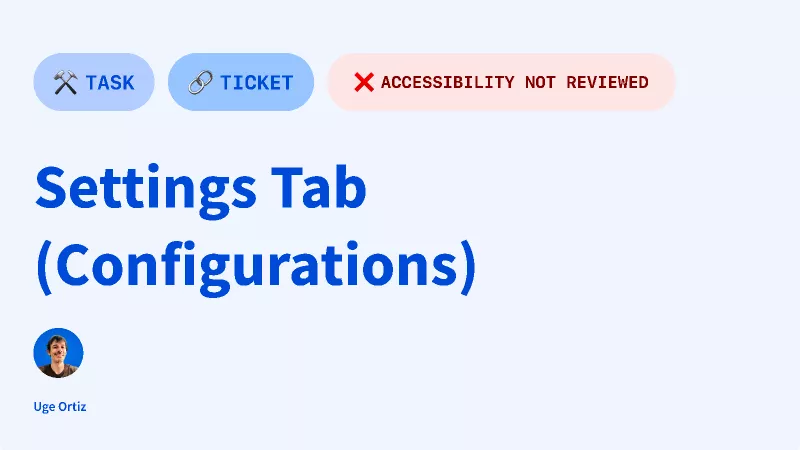
Top row = the 10 files carrying an LPD key (badge shows the Jira status);
the rest are discovery / exploration surfaces with a heuristic design-status badge. Thumbnails and inventory
captured 1 July 2026 via skills/figma-project-state (Figma REST); raw data in
figma_state.json. 2 FigJam/Slides files in the project are not shown (unsupported by the file endpoint).